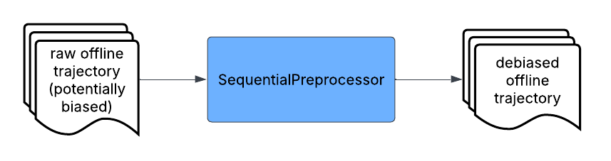
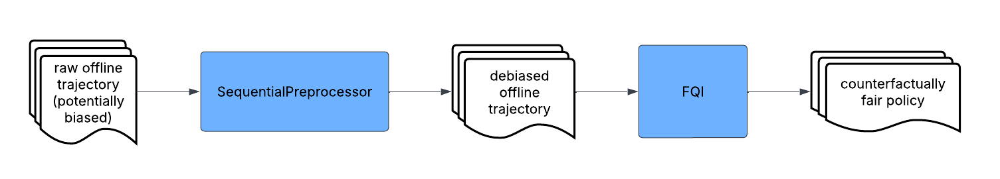
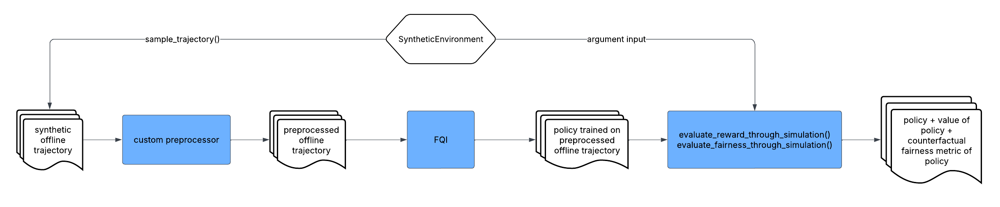
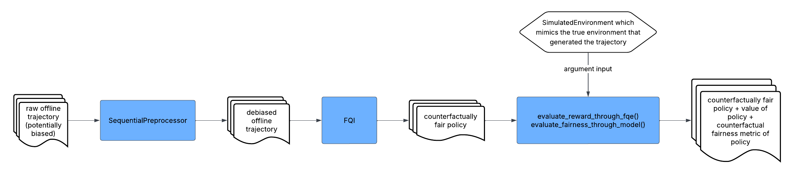

Example Workflows
This section demonstrates some major workflows that can be performed by CFRL.
Preprocessing Only
In this workflow, CFRL takes in an offline trajectory and then preprocesses the offline trajectory
using SyntheticPreprocessor. The final output of the workflow is the preprocessed (debiased)
offline trajectory. This workflow is appropriate when the user does not want to train policies using
CFRL. Instead, the user can take the preprocessed trajectory to train a counterfactually fair policy
using another reinforcement learning library or application that better fits their needs.
Code: A detailed code demonstration of this workflow can be found here.
Preprocessing + Policy Learning
In this workflow, CFRL takes in an offline trajectory and then preprocesses the offline trajectory
using SequentialPreprocessor. After that, the preprocessed trajectory is passed into
FQI to train a counterfactually fair policy, which is the final output of the workflow. This
workflow is appropriate if the user wants to train a policy using CFRL. The trained policy can be
further evaluated on its value and counterfactual fairness, which is discussed in detail in the
“Assessing Policies Using Real Data” workflow later in this section.
Code: A detailed code demonstration of this workflow can be found here.
Assessing Preprocessors Using Synthetic Data
In this workflow, CFRL first uses sample_trajectory() to sample a trajectory from a
SyntheticEnvironment whose transition rules are pre-specified. It then preprocesses the
sampled trajectory using some custom preprocessor defined by the user.
After that, the preprocessed trajectory is passed into FQI to train a policy, which is then
assessed using synthetic data via evaluate_reward_through_simulation() and
evaluate_fairness_through_simulation(). The final output of the workflow is the policy trained
on the preprocessed data as well as its estimated value and counterfactual fairness metric. This
workflow is appropriate when the user wants to examine the impact of some trajectory preprocessing
method on the value and counterfactual fairness of the trained policy.
Code: A detailed code demonstration of this workflow can be found here.
Assessing Policies Using Real Data
In this workflow, CFRL takes in an offline trajectory and then preprocesses the offline trajectory
using SequentialPreprocessor. After that, the preprocessed trajectory is passed into
FQI to train a counterfactually fair policy, which is then assessed using
evaluate_reward_through_fqe() and evaluate_fairness_through_model() based on a
SimulatedEnvironment that mimics the transition rules of the true environment underlying the
training trajectory. The final output of the workflow is the policy trained on the preprocessed data
as well as its estimated value and counterfactual fairness metric. This workflow is appropriate when the
user is interested in knowing the value and counterfactual fairness achieved by the trained policy when
interacting with the true underlying environment.
Code: A detailed code demonstration of this workflow can be found here.
Conceptual Explanation: A step-by-step conceptual explanation of this workflow can be found here.